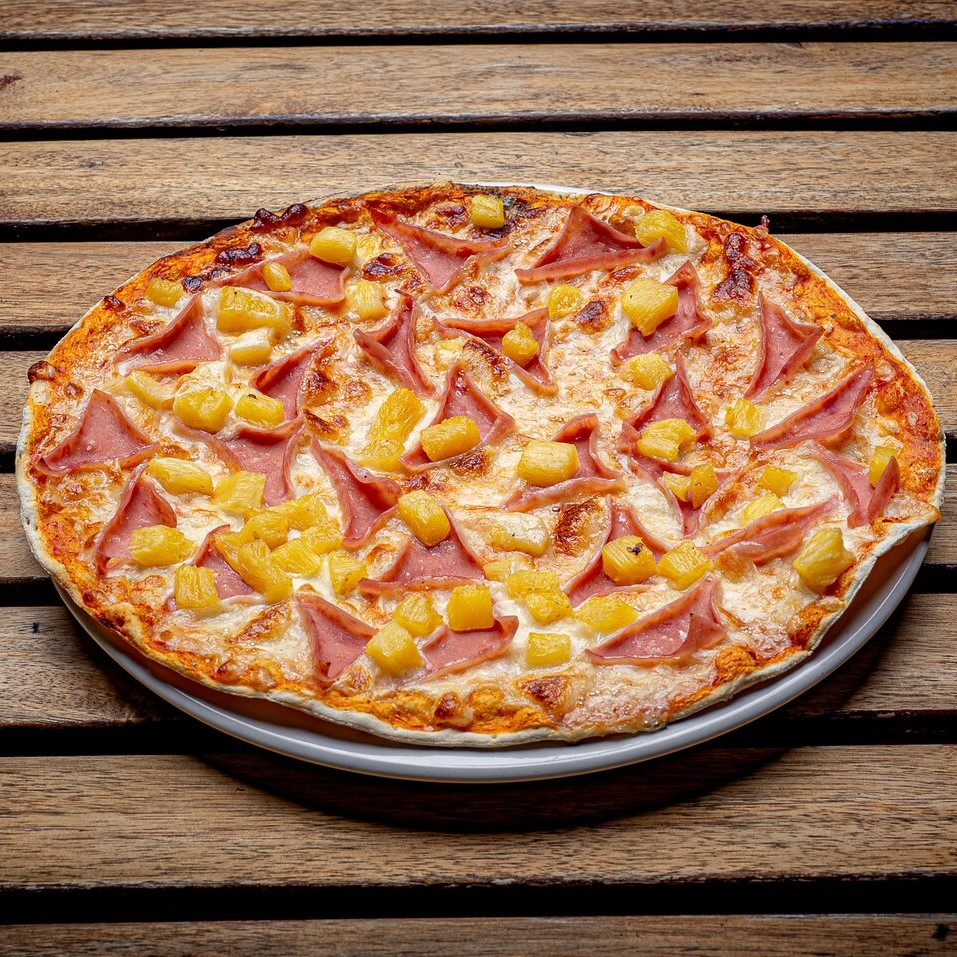
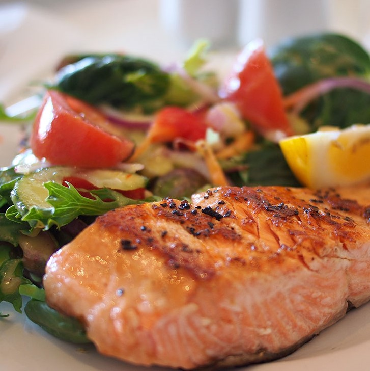
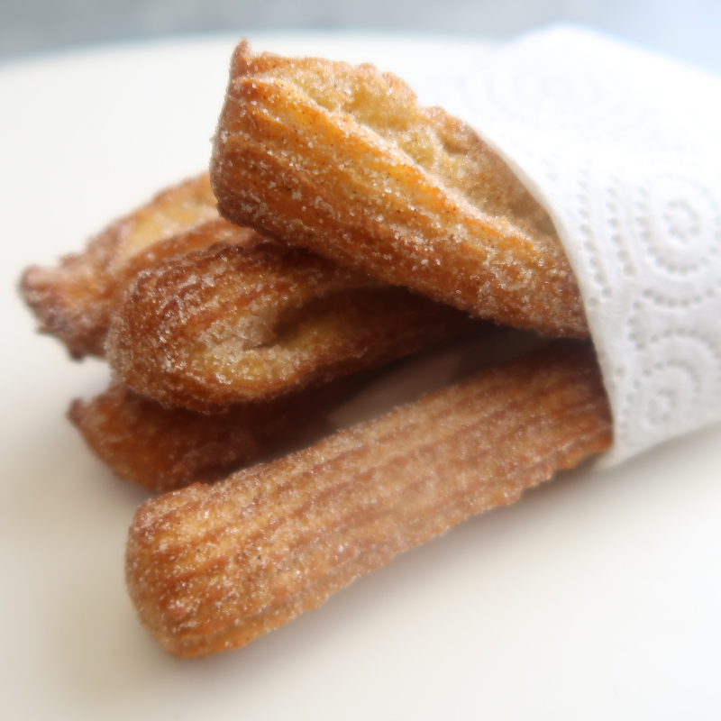

Sus ingredientes principales que lleva sería la carne adobada, asada, servida en finas rebanadas sobre pequeñas tortillas de maíz.
5 x $15
Tacos de Suadero
Detalles
Sus ingredientes principales que contiene sería es una tortilla de maíz rellena de suadero picado, es decir, una o varias partes de la carne de vaca.
5 x $15
Burritos
Detalles
Este platillo conlleva hacia unasimple mezcla de carne, queso y tomate se ha convertido en una comida completa con arroz, frijoles, carne, queso, verduras y salsas envueltas en una tortilla.
$40
Barbacoa
Detalles
Este guiso tradicional contiene diversas carnes del borregoco, por lo cual son cocidas en su propio jugo junto con una salsa que adoba la carne.
1Kg = $100
Pozole
Detalles
Este caldo contiene maíz de cacahuazintle seco, junto con carne de puerco, está condimentado con jugo de limón, sal, salsa picante o chile piquín molido, lechuga, rábanos rebanados, cebolla picada y orégano molido.
Plato Chico = $20
Plato Mediano = $30
Plato Grande = $40
Enchiladas
Detalles
El platillo está elaborado con tortillas de maíz, están rellenas de pollo deshebrado. Además encima están bañadas en una salsa (picante o no) utilizando un chile en su preparación, también se acompaña de lechuga, trozos pequeños de cebolla, queso panela y crema
4 rollos = $40
Pambazos
Detalles
El pambazo tiene como relleno papa y chorizo, lechuga, queso panela, crema, salsa (picante o no). Por lo tanto el pan está sumergido en salsa de guajillo y se cocina frito sobre un comal con un poco de aceite.
$20
Sopa Azteca
Detalles
La sopa contiene tiras de tortilla fritas, que son bañadas con el caldillo. Y además son acompañadas con aguacate, queso Oaxaca, crema y chile pasilla frito en trozos pequeños.
Plato Chico = $20
Plato Mediano = $30
Plato Grande = $40
Tostadas de Cochinita Pibil
Detalles
Es un guiso que se prepara con carne de cerdo deshilachada. Esta carne se marina en achiote, zumo de naranja agria, chile habanero, sal y pimienta. Además se acompaña con tostadas y cebollas moradas
2 x $30
Frijoles Charros
Detalles
Es una sopa en donde esta contiene los frijoles pintos, por lo cual su caldo está proporcionado por diferentes tipos de carnes mezcladas como el chorizo, el jamón y el tocino.
Plato Chico = $20
Plato Mediano = $30
Plato Grande = $40
Chiles en Nogada
Detalles
El platillo contiene un chile poblano, está rellenado de picadillo (de res o/y cerdo). Además, contiene frutos secos, piñón, almendras, pasas, una salsa de nuez que está acompañada de granadas.
$60
Sopes
Detalles
Este platillo consiste en una tortilla gruesa y ancha, por las cual lleva orillas para formarle bordes y frita en manteca. Sobre ella se añaden diferentes ingredientes como frijol, papa y chorizo, lechuga, queso panela y salsa.
2 x $25
Combos y Especiales
Alambre
Detalles
Este platillo contiene trozos de carne guisados con tocino, chile morrón (pimiento), chorizo, cebolla y acompañado de algún queso que se funde en la superficie. Y además viene acompañado de 8 tortillas de harina
$80
Anticucho
Detalles
Es un platillo muy conocido en Perú, por lo cual contiene como ingredientes trozos de carne insertados a modo de brocheta (se incluye 4 bochetas por platillo),por lo tanto está acompañado con papa sancochada, camote, elote y cremas
$65
Hamburguesa
Detalles
Contiene bollos (pan), mayonesa, carne molida de res, tocino, queso amarillo, lechuga, tomate, cebolla morada, salsa de soya y salsas (Kétchup, mostaza y salsa picante al gusto). Además incluye una orden de papas a la francesa.
$65
Pizza Hawaiana

Detalles
Este platillo conlleva a una masa de de harina, por lo cual lleva tomate, queso fundido, salsa barbecue, jamón y piña. Es una pizza de tamañano grande y esta incluye junto una docena de canelazos
$120
Ensalada de Pollo
Detalles
Este alimento contiene en la superficie trozos de pollo empanizado, lechuga, espinacas, jitomate cereza, pepino y jicama. Mientras que en la base contiene ensalada rusa (zanahoria y papa) junto con una sopa de codito
$50
Lasaña
Detalles
El platillo lleva como ingredientes laminas de pasta, carne molida, queso derretido, salsa de tomate. Ademas está acompañada de una ensalada de lechuga, espinaca, mango, fresa, zanahoria raydada y jicama
$85
Filete de Pescado

Detalles
El platillo conlleva como ingredientes el filete de pescado. Por lo cual en una apartado lleva betabel, junto con una ensalada de espinacas, con naranja, lleva trozos de jitomate, cebolla, pepino (con o sin cascara) y uva.
$70
Sushi
Detalles
Es un platillo muy conocido en Japón, por lo tanto contiene arroz adobado con vinagre, azúcar, sal y pescados, mariscos o verduras.
$60
Bebidas
Agua
Detalles
Botella de agua (fría o a tiempo) de un litro.
$8
Café
Detalles
Taza de café caliente (con o sin leche).
Taza de 250ml a $10
Taza de 500ml = $14
Refrescos
Detalles
Refrescos de vidrio de medio litro. Los envases pueden ser CocaCola, Fanta, Sidral, Boing, Lulú, Jarrito, Sangría y Sprite.
500ml a $16
Agua de Sabor
Detalles
Contamos de sabor de Jamaica, Horchata y Tamarindo.
Vaso de 250ml a $12
Vaso de 500ml = $15
Vaso de 1 litro = $18
Postres
Helado
Detalles
Contiene de sabores: Chocolate, Vainilla, Fresa, Limon, Pistache, Oreo, Nuez, Coco y Napolitano. Puede ser en vaso o en barquillo
Sencillo a $10
Doble a $20
Pie de Limón
Detalles
Es una tarta que contiene una base de masa hojaldre, por lo que se rellena con crema de limón. Además la tarta se complementa con un merengue
Una Rebanada por $22
Churros

Detalles
Es un postre, que está cocinado por medio de un sartén hecha de agua, harina, aceite y sal. Por lo cual tiene formas de lazos.
Una docena por $15
Flan
Detalles
Es un postre que contiene una natilla cremosa y gelotinosa, por lo cual es cocinado por medio de ingredientes principales huevos, leche y azúcar.
Una rebanada por $18
Restaurante Los Fogones
Contactos:
Creador de la página web: Rodrigo Gutiérrez Guadarrama, Grupo: 2507, Asignatura: Programación Web